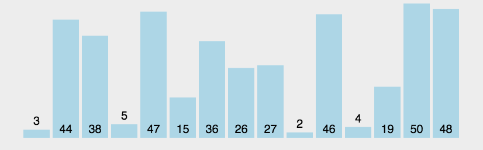
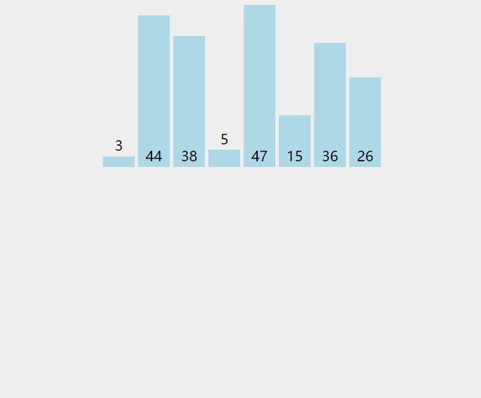
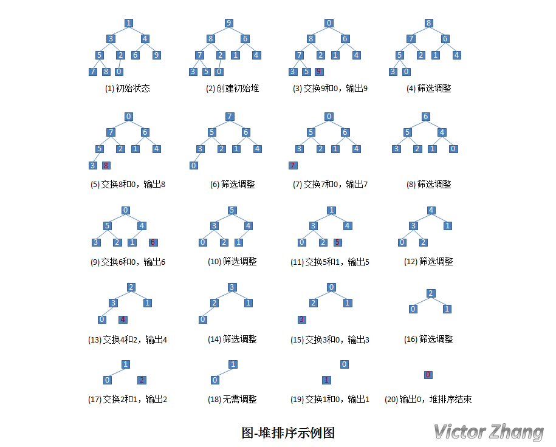
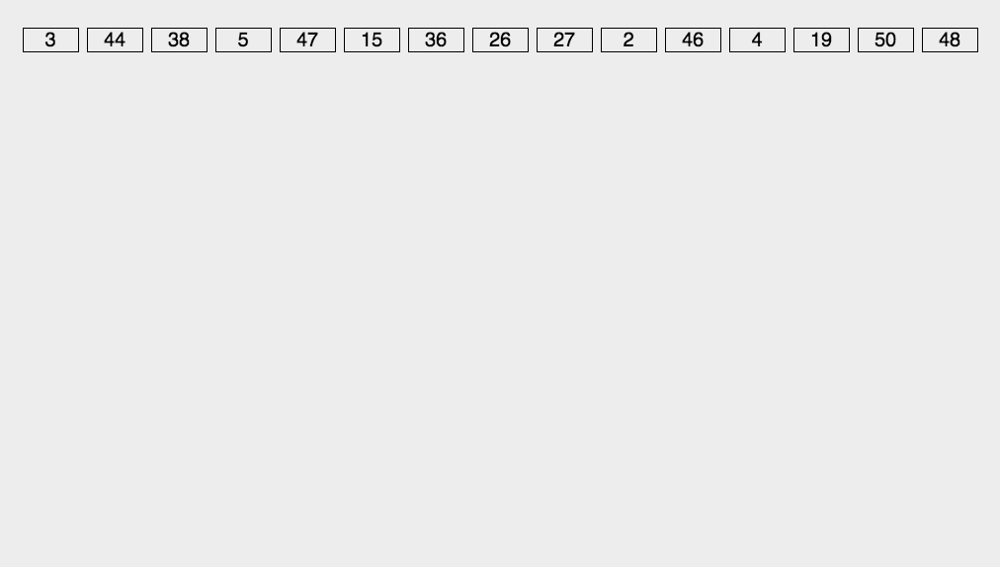

八大排序算法
冒泡排序
一、算法思想 它重复地走访要排序地数列，一次比较两个元素，如果他们的顺序有误就把他们交换一下。走访数列的工作是重复地进行直到没有再需要交换，即该数列已经排序完成。 动态效果示意图：

假设有一个大小为 N 的无序序列。以升序冒泡排序为例，冒泡排序就是要每趟排序过程中通过两两比较相邻元素，将小的数字放到前面，大的数字放在后面。 二、代码1 |
|
简单的来说，代码就是用两个for嵌套循环遍历数列，然后两两比较，交换顺序。所以很明显，时间复杂度为O(n^2)。
直接插入排序
一、算法思想 插入排序： 每一趟将一个待排序的记录，按照其关键字的大小插入到有序队列的合适位置里，直到全部插入完成。 动态效果示意图：

以上的过程，就是典型的直接插入排序，每次将一个新数据插入到有序队列中的合适位置。 假设有一组无序序列 R0,R1, … ,RN-1。- 我们先将这个序列中下标为0的元素视为元素个数为1的有序序列。
- 然后依次遍历R1,R2,…,RN-1。把他们插入到这个有序序列中。
- 插入Ri时，前Ri-1个数肯定是有序序列了。所以只需要将Ri跟R0~Ri-1进行比较，有一个内部循环。
二、代码 C++：1
2
3
4
5
6
7
8
9
10
11
12
13
14
15
16
17
18
19
20
21
22
23
24
25
26
27
28
29
30
31
32
33
34
35
36
37
38
39
40
41
42
using namespace std;
vector<int> insertSort(vector<int> list){
vector<int> result;
if (list.empty()){
return result;
}
result = list;
// 第1个数肯定是有序的，从第2个数开始遍历，依次插入有序序列
for (int i = 1; i < result.size(); i++){
// 取出第i个数，和前i-1个数比较后，插入合适位置
int temp = result[i];
// 因为前i-1个数都是从小到大的有序序列，所以只要当前比较的数(list[j])比temp大，就把这个数后移一位
int j = i - 1;
for (j; j >= 0 && result[j] > temp; j--){
result[j + 1] = result[j];
}
result[j + 1] = temp;
}
return result;
}
void main(){
int arr[] = { 6, 4, 8, 9, 2, 3, 1 };
vector<int> test(arr, arr + sizeof(arr) / sizeof(arr[0]));
cout << "排序前" << endl;
for (int i = 0; i < test.size(); i++){
cout << test[i] << " ";
}
cout << endl;
vector<int> result;
result = insertSort(test);
cout << "排序后" << endl;
for (int i = 0; i < result.size(); i++){
cout << result[i] << " ";
}
cout << endl;
system("pause");
}
然后这个时间复杂度，如果数据正序，效率最好，每一次插入都不用移动元素，那就直接遍历一次，时间复杂度为O(N)； 如果数据反序，每一次插入都需要将前面的元素后移，时间复杂度为O(N)。 空间复杂度为1。 由于，在插入序列过程中，序列是有序的，所以可以使用二分查找，减少元素比较次数，提高程序效率。
希尔排序
一、算法思想 希尔(Shell)排序又称为缩小增量排序，它是一种插入排序。它是直接插入排序算法的一种威力加强版。 假设有这样一组数 {13, 14, 94, 33, 82, 25, 59, 94, 65, 23, 45, 27, 73, 25, 39, 10}，如果我们以步长为 5 开始进行排序：
13 14 94 33 82
25 59 94 65 23
45 27 73 25 39
10
然后我们对每列进行排序：
10 14 73 25 23
13 27 94 33 39
25 59 94 65 82
45
将上述四行数字，依序接在一起时我们得到：{10, 14, 73, 25, 23, 13, 27, 94, 33, 39, 25, 59, 94, 65, 82, 45}，然后再以 3 为步长：
10 14 73
25 23 13
27 94 33
39 25 59
94 65 82
45
排序之后变为：
10 14 13
25 23 33
27 25 59
39 65 73
45 94 82
94
最后以 1 为步长进行排序（此时就是简单的插入排序了）。 简而言之，希尔排序就是每隔几个插入的插入排序。（每隔几个就是步长）。 步长更新一般是d=d/2 或者d=3d+1
二、代码1
2
3
4
5
6
7
8
9
10
11
12
13
14
15
16
17
18
19
20
21
22
23
24
25
26
27
28
29
30
31
32
33
34
35
36
37
38
39
40
41
42
43
using namespace std;
vector<int> ShellSort(vector<int> list){
vector<int> result = list;
int n = result.size();
for (int gap = n >> 1; gap > 0; gap >>= 1){
for (int i = gap; i < n; i++){
int temp = result[i];
int j = i - gap;
while (j >= 0 && result[j] > temp){
result[j + gap] = result[j];
j -= gap;
}
result[j + gap] = temp;
}
for (int i = 0; i < result.size(); i++){
cout << result[i] << " ";
}
cout << endl;
}
return result;
}
void main(){
int arr[] = { 6, 4, 8, 9, 2, 3, 1 };
vector<int> test(arr, arr + sizeof(arr) / sizeof(arr[0]));
cout << "排序前" << endl;
for (int i = 0; i < test.size(); i++){
cout << test[i] << " ";
}
cout << endl;
vector<int> result;
result = ShellSort(test);
cout << "排序后" << endl;
for (int i = 0; i < result.size(); i++){
cout << result[i] << " ";
}
cout << endl;
system("pause");
}
时间复杂度跟步长有关，步长不同，时间复杂度也不同。 希尔排序中相等的数据可能会交换位置，所以希尔排序是不稳定的算法。 直接插入排序是稳定的；而希尔排序是不稳定的。 直接插入排序更适合于原始记录基本有序的集合。 希尔排序的比较次数和移动次数都要比直接插入排序少，当N越大时，效果越明显。 直接插入排序也适用于链式存储结构；希尔排序不适用于链式结构。
快速排序
一、算法思想 快速排序的基本思想是：通过一趟排序将要排序的数据分割成独立的两部分：分割点左边都是比它小的数，右边都是比它大的数。 然后再按此方法对这两部分数据分别进行快速排序，整个排序过程可以递归进行，以此达到整个数据变成有序序列。  二、代码 我就不手写了，直接调用库函数
二、代码 我就不手写了，直接调用库函数qsort()，用法的话，就是定义一个cmp比较函数，然后放进去就好了。
1 | void QuickSort(int A[], int n){ |
简单选择排序
一、算法思想 简单排序很简单，它的大致处理流程为：
- 从待排序序列中，找到关键字最小的元素；
- 如果最小元素不是待排序序列的第一个元素，将其和第一个元素互换；
- 从余下的 N - 1 个元素中，找出关键字最小的元素，重复(1)、(2)步，直到排序结束。
动态效果示意图：  二、代码
二、代码
1 |
|
时间复杂度为O(N^2)。
堆排序
一、算法思想 堆排序是一种选择排序。 选择排序：每趟从待排序的记录中选出关键字最小的记录，顺序放在已排序的记录序列末尾，直到全部排序结束为止。 动态示意图：  堆是一棵顺序存储的完全二叉树。
堆是一棵顺序存储的完全二叉树。
- 其中每个结点的关键字都不大于其孩子结点的关键字，这样的堆称为小根堆。
- 其中每个结点的关键字都不小于其孩子结点的关键字，这样的堆称为大根堆。
堆一般满足以下规律： 设当前元素在数组中以R[i]表示，那么， (1) 它的左孩子结点是：R[2*i+1]; (2) 它的右孩子结点是：R[2*i+2]; (3) 它的父结点是：R[(i-1)/2]; (4) R[i] <= R[2*i+1] 且 R[i] <= R[2i+2]。 还是针对前面提到的无序序列 { 1, 3, 4, 5, 2, 6, 9, 7, 8, 0 } 来加以说明。

二、代码1 |
|
时间复杂度为O(nlogn)。
归并排序
一、算法思想 该算法采用经典的分治策略。 动态效果示意图：  归并排序，分而治，先把一串数列分成最小的元素，然后再合成的时候排序，最后合成一串有序数列。 二、代码
归并排序，分而治，先把一串数列分成最小的元素，然后再合成的时候排序，最后合成一串有序数列。 二、代码1
2
3
4
5
6
7
8
9
10
11
12
13
14
15
16
17
18
19
20
21
22
23
24
25
26
27
28
29
30
31
32
33
34
35
36
37
38
39
40
41
42
43
44
45
46
47
48
49
50
51
52
53
54
55
56
57
58
59
60
61
62
63
64
65
66
67
68
69
70
using namespace std;
void Merge(vector<int> &input, int left, int mid, int right, vector<int> temp){
int i = left; // i是第一段序列的下标
int j = mid + 1; // j是第二段序列的下标
int k = 0; // k是临时存放合并序列的下标
// 扫描第一段和第二段序列，直到有一个扫描结束
while (i <= mid && j <= right){
// 判断第一段和第二段取出的数哪个更小，将其存入合并序列，并继续向下扫描
if (input[i] <= input[j]){
temp[k++] = input[i++];
}
else{
temp[k++] = input[j++];
}
}
// 若第一段序列还没扫描完，将其全部复制到合并序列
while (i <= mid){
temp[k++] = input[i++];
}
// 若第二段序列还没扫描完，将其全部复制到合并序列
while (j <= right){
temp[k++] = input[j++];
}
k = 0;
// 将合并序列复制到原始序列中
while (left <= right){
input[left++] = temp[k++];
}
}
void MergeSort(vector<int> &input, int left, int right, vector<int> temp){
if (left < right){
int mid = (right + left) >> 1;
MergeSort(input, left, mid, temp);
MergeSort(input, mid + 1, right, temp);
Merge(input, left, mid, right, temp);
}
}
void mergesort(vector<int> &input){
// 在排序前，先建好一个长度等于原数组长度的临时数组，避免递归中频繁开辟空间
vector<int> temp(input.size());
MergeSort(input, 0, input.size() - 1, temp);
}
void main(){
int arr[] = { 6, 4, 8, 9, 2, 3, 1};
vector<int> test(arr, arr + sizeof(arr) / sizeof(arr[0]));
cout << "排序前:";
for (int i = 0; i < test.size(); i++){
cout << test[i] << " ";
}
cout << endl;
vector<int> result = test;
mergesort(result);
cout << "排序后:";
for (int i = 0; i < result.size(); i++){
cout << result[i] << " ";
}
cout << endl;
system("pause");
}
时间复杂度为O(nlog2n)。 归并排序和堆排序、快速排序的比较
- 若从空间复杂度来考虑：首选堆排序，其次是快速排序，最后是归并排序。
- 若从稳定性来考虑，应选取归并排序，因为堆排序和快速排序都是不稳定的。
- 若从平均情况下的排序速度考虑，应该选择快速排序。
基数排序
一、算法思想 在讲基数排序之前，先讲一下计数排序和桶排序。 老师给全班学生成绩排名，满分100分，那么老师可以选择一种排序方式，从0分到100分分成5个档次，0~20分；21~40分；41~60分；61~80分；81~100分。然后依次把每人的成绩对应的档次填进去。最后公布排名就直接按档次顺序念。如果还要分的再细一点，可以分成10个档次、100个档次。 而基数排序就是类似这样的一种排序。 它的基本思想：将所有待比较数值（正整数）统一为同样的数位长度，数位较短的数前面补零。然后，从最低位开始，依次进行一次排序。这样从最低位排序一直到最高位排序完成以后,数列就变成一个有序序列。 只不过基数排序不用开这么大的数组，它按照个位数归类，再按照十位数归类，一直到最高最。 动态效果示意图：

二、代码
1 |
|
时间复杂度O(n*d) 空间复杂度O(n)。 d表示最高位位数。